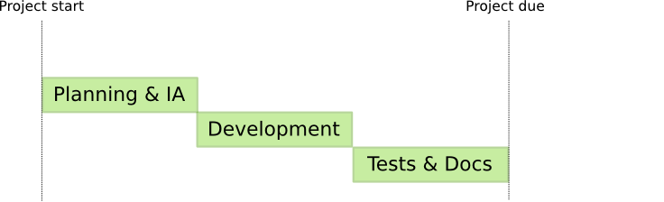
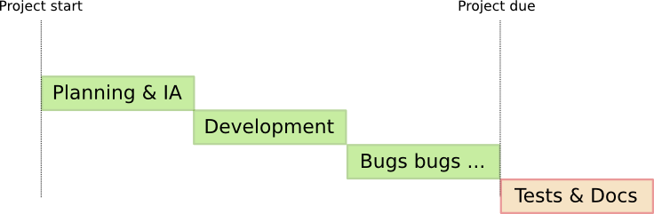

TDD - Protecting yourself from your own worst enemy
Malcolm Locke
Wholemeal Ltd
TDD is ...
- Test Driven Development
- Before you write any code, write a test for it
Why write tests?
- Fewer bugs make it through to production
- Stop looking at the browser
- Safety net - refactor with confidence
- Codified documentation
- Become the first consumer of your API
Dear Ruby on Rails users ...
- You are VERY lucky!
- Testing built into the platform
- Testing part of the Ruby culture
Why write tests before code?
- Assuming you accept writing tests is a good idea, why write them before
the code you're planning to test?
Typical project plan

Typical project reality

Principles
- Before you write any code, write a test
- Write enough of a test (and no more) to expose a behaviour or bug, and ensure it fails
- Write enough code (and no more) to make the test pass
- Rinse and repeat ...
Benefits of TDD?
- Tests actually get written
- Documentation of expected behaviour
- Test your requirements, not wot you just writ
- Safe refactoring
Drawbacks of TDD?
- Tests actually get written
- Slower development pace than 'hack and hope', about the same amount of test code as 'real code'
- Benefits not always obvious to customers or management
Types of test
- Integration tests
- Functional tests
- Unit tests
Types of test
Integration tests
Functional tests
Unit tests
Unit tests
Test the smallest units of code, e.g. functions / methods.
class Adder
def add_it first, second
first + second
end
end
test "should add two numbers together" do
assert_equal 3, @adder.add_it(1,2)
end
Functional tests
In web development, typically test a single request
test "should get index" do
get :index
assert_response :success
assert assigns(:comments)
assert_instance_of Array, assigns(:comments)
assert_equal 3, assigns(:comments).count
assert_select 'ul#comments'
assert_select 'ul#comments li', 3
end
Integration tests
Test multiple request workflows
def test_login_and_browse_site
get "/login"
assert_response :success
post_via_redirect "/login", :username => users(:adm).username,
:password => users(:adm).password
assert_equal '/welcome', path
assert_equal 'Welcome admin!', flash[:notice]
end
Other concepts
- Mocking
- Fixtures (dummy data)
- Continuous integration servers - Tweet failed builds!
- Javascript testing - jsUnit, Selenium
- Autotest - Run tests on modified files automatically
- BDD - Behaviour Driven Development